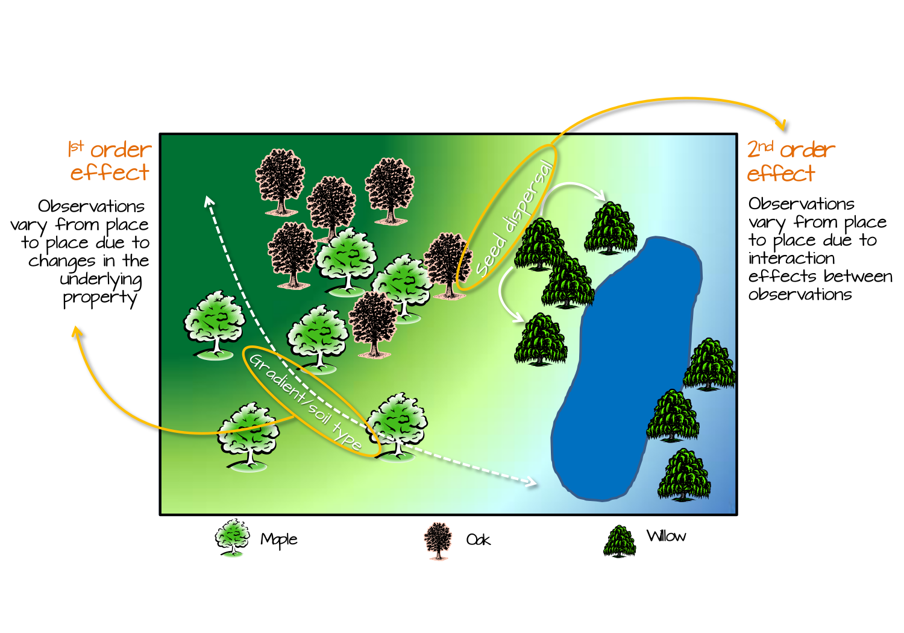

11 Analyzing Spatial Patterns
11.1 Introduction
Spatial data are pervasive in daily life and scientific research, from disease outbreaks to precipitation distribution. We often look at these maps and intuitively recognize patterns: clusters of events, gradients across space, or areas of unusual activity. But how do we move from visual impressions to statistical analysis?
This chapter lays the conceptual foundation for spatial statistical analysis by introducing spatial processes, which generate the observed patterns we analyze. We begin by defining what it means to quantify a spatial pattern, and then explore how spatial processes can be characterized through two key lenses: first-order effects, which describe broad spatial trends, and second-order effects, which capture local interactions or dependencies.
Understanding this distinction is essential for interpreting spatial patterns. It helps us answer questions like: Is this cluster of events meaningful, or could it have occurred by chance? Are nearby observations influencing each other, or is there an underlying gradient driving the pattern?
11.2 From Maps to Models: Defining Spatial Patterns Statistically
Spatial processes may include both deterministic and stochastic components. The deterministic part reflects systematic variation—such as a spatial trend or the influence of known covariates—while the stochastic part captures random variation or uncertainty, including spatial dependence. Most statistical techniques in spatial analysis (including those covered in subsequent chapters) combine these elements, allowing us to describe both the predictable and unpredictable aspects of spatial patterns.
To analyze these patterns, we need a statistical baseline–a null model that represents the absence of spatial structure. The most common is Complete Spatial Randomness (CSR), which assumes:
- No First-Order Effects: Every location has an equal probability of hosting an event, meaning the event intensity or density is constant across the study area.
- No Second-Order Effects: The location of one event is independent of the location of another, implying no spatial interaction or clustering/dispersion among events.
For point patterns this is characterized as a homogeneous Poisson process where events occur independently and are uniformly distributed across the study region. For attribute data (such as values measured at fixed locations or aggregated to areas) the analogous null hypothesis often assumes that observed spatial variation is purely random.
CSR provides a reference against which observed patterns can be compared. Deviations from these benchmarks of no spatial structure suggest the presence of non-random spatial structure, which can manifest as either large-scale variation (first-order process) or local spatial dependence (second-order process). It is important to note that distinguishing between these first- and second-order effects from a single observed pattern can be challenging.
Many spatial methods also assume some form of stationarity, meaning that the statistical properties of the process do not vary across space. Violations of this assumption often manifest as first-order effects.
11.2.1 First-Order Effects: Spatial Trend and Intensity
First-order effects describe the large-scale variation or spatial trend of a phenomenon across space. For point patterns, this involves how the event intensity (the average rate or expected number of events) varies. For attribute data (such as continuous fields or values aggregated to areas), it refers to how the mean or expected value of the attribute changes systematically across the study region. These effects reflect broad, underlying factors that influence the spatial distribution of the observed phenomena
Examples:
- Tree density increasing with elevation or soil type.
- Crime rates higher in urban centers due to population density.
- Rainfall decreasing as one moves westward.
If not accounted for, strong first-order trends can create the illusion of clustering or dispersion. This highlights a crucial challenge in spatial analysis: it can be difficult to distinguish between first-order variation and true inter-point interaction (second-order effects) from a single observed pattern. For instance, a gradient in tree density might appear as a cluster when viewed on a map, even if no local interaction exists.
11.2.2 Second-Order Effects: Interaction and Autocorrelation
Second-order effects describe local dependencies–how the presence or value of one observation influences others nearby.
Examples:
- Trees clustering due to seed dispersal.
- High crime rates spreading to adjacent neighborhoods due to local dynamics.
For point data, these are often called interactions between events, while for continuous field data, they are referred to as spatial autocorrelation. Analyzing second-order properties typically involves assessing patterns of interaction beyond any underlying spatial trend or varying intensity.
11.3 Why Distinguishing These Effects Matters
First-order and second-order effects offer complementary insights into spatial patterns. An observed cluster might be due to a spatial trend (first-order), local interaction (second-order), or both. However, it is often difficult to distinguish these effects in practice from a single observed pattern. Failing to distinguish between these can lead to incorrect conclusions about the underlying process, a common pitfall in spatial analysis. From a single realization, it is mathematically impossible to distinguish between a process of independent events generated under a heterogeneous intensity and one of dependent events generated under homogeneous intensity.
In practice, realistic null hypotheses often account for first-order effects when testing for second-order ones. For example, we might use a heterogeneous Poisson process to model varying intensity across space. This model assumes that event intensity or the likelihood of observing a point changes spatially due to external factors, but critically, it still assumes that events occur independently of each other. Thus, it serves as a baseline to test for clustering or interaction beyond any underlying spatial trend.
In many spatial analyses, first-order effects are modeled first, and second-order effects are then examined in the residuals that remain after the first-order structure has been removed.
11.4 Spatial Data Types and Applicability of First- and Second-Order Effects
We learned in chapter 2 that spatial data can be broadly categorized into two types: object-based, which treat the world as discrete entities located in space (e.g., points for crime locations or tree positions, or polygons for administrative boundaries), and field-based, which represent continuous phenomena measured across space (such as temperature, elevation, or precipitation). These distinct representations influence the methods used to analyze spatial patterns.
Regardless of the data type, the concepts of first-order and second-order effects apply. For point data, first-order effects describe variations in event intensity across space, while second-order effects capture interactions between events. For continuous fields, first-order effects are often modeled using trend surfaces and interpolation methods, while second-order effects are commonly examined through measures of spatial autocorrelation.
Understanding the nature of the data helps determine the appropriate analytical techniques, but the overarching framework of first-order and second-order effects remains relevant across data types.
11.5 Quantifying Patterns vs. Hypothesis Testing
Spatial statistical analysis involves both descriptive and inferential approaches. Descriptive methods quantify spatial patterns using metrics such as density/intensity, clustering indices, or autocorrelation coefficients. These tools help summarize and visualize spatial structure.
Inferential methods, on the other hand, involve hypothesis testing to assess whether observed patterns deviate significantly from a null model such as CSR. For example, we might test whether clustering in a point pattern exceeds what would be expected under a random process, or whether spatial autocorrelation in a field is statistically significant.
Distinguishing between quantifying and testing is important: the former describes what is observed, while the latter evaluates whether those observations are likely to have occurred by chance.
Throughout this part of the book, many techniques will first be introduced as descriptive measures of spatial structure and later extended into formal hypothesis-testing frameworks.
11.6 A Note on Terminology: Why First-Order and Second-Order?
The terms first-order and second-order effects in spatial statistics are inspired by the first and second moments of statistical distributions. The first moment refers to the mean or expected value, which aligns with first-order effects describing average intensity or spatial trend. The second moment relates to variance and covariance, which corresponds to second-order effects capturing spatial dependence or interaction.
This terminology provides a conceptual bridge between spatial statistics and classical statistical theory, reinforcing the idea that spatial patterns can be rigorously analyzed using familiar statistical principles.
11.7 Summary
This chapter lays the conceptual foundation for spatial statistical analysis by introducing the distinction between first-order and second-order spatial effects. By distinguishing between first-order and second-order effects, we gain a clearer understanding of spatial processes and avoid common pitfalls in interpretation.
The chapters that follow build on the concepts of first-order and second-order effects while introducing a logical progression of analytical tools:
Chapter 12: Modeling Spatial Trend Focuses on quantifying first-order effects (broad spatial trends) using trend surfaces and polynomial functions to describe how a variable changes across space, often as a preliminary step to remove global variation.
Chapter 13: Spatial Autocorrelation Introduces spatial autocorrelation as a second-order property, focusing on Global and Local Moran’s I, permutation-based significance testing, and the interpretation of spatial dependence in continuous or areal data.
Chapter 14: First-Order Point Pattern Analysis: Modeling Spatial Intensity Examines first-order effects in point patterns by detecting and modeling variations in event intensity across space, using descriptive density measures and Poisson point process models (PPM) to test for covariate influences.
Chapter 15: Second-Order Point Pattern Analysis: Modeling Distance Analyzes second-order effects (spatial interaction, clustering, or dispersion) in point patterns through distance-based methods like Average Nearest Neighbor (ANN), Ripley’s K and L functions, and the Pair Correlation Function (PCF), often using Monte Carlo tests
Chapter 16: Spatial Interpolation Examines methods for estimating values at unsampled locations in continuous fields. The chapter contrasts deterministic approaches such as Thiessen interpolation and IDW with statistical approaches such as trend surfaces and kriging, while introducing techniques for evaluating interpolation accuracy and uncertainty.
11.8 Suggested resources
The following list of resources is designed for readers wanting to learn more about spatial statistics, ordered by increasing complexity:
- Geographic Information Analysis (O’Sullivan and Unwin 2010)
- Interactive Spatial Data Analysis (Bailey and Gatrell 1995)
- Spatial Data Science (with applications in R) (Pebesma and Bivand 2021)
- Spatial Point Patterns, Methodology and Applications with R (Baddeley et al. 2016)
- Applied Spatial Statistics for Public Health Data (Waller and Gotway 2004)
- Spatial-Temporal Statistics with R (C. K. Wikle 2019)
- Spatial Data Analysis: Theory and Practice (Haining 2004)